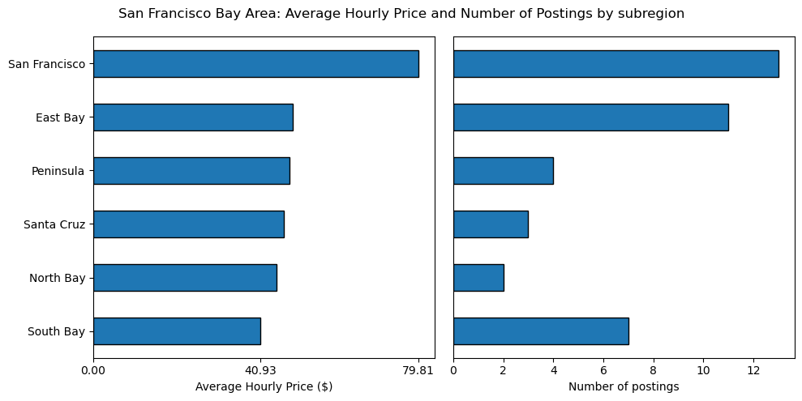

Analyzing Craigslist Tutoring Prices
Goal: To analyze the dataset of tutoring prices I built and understand my local and national competition for the math tutoring service I run.
Python, PostgreSQLData Analysis, Visualization
Background and Impact
Outside of my day job, I also run a math tutoring service. A majority of my business comes from Craigslist (CL), and I wanted to understand my competition on CL better.In another project, I built a tool that mined tutoring prices from Craigslist postings and stored them in a local PostgreSQL database. In order to analyze the dataset, I queried it from the database using SQL and then created visualizations using Python.
The process:
- Create a table in the database for United States Census data to aid visualizations.
- Query Craigslist data from the local PostgreSQL database and join it to the US census data. Segment by various geographic locations, then visualize using Python:
- US Census Region
- State
- SF Bay Area
- State any important conclusions.
Impact
Based on the findings, I was able to see that my hourly rates were below average relative to not just the South Bay, where I predominately operate, but also lower than the average for the state of California and lower than the average for the entire West Coast of the United States. As such, I was able to increase my hourly rates to a level where I felt I'd still be able to remain competitive.
Part 1: Creating table for United States (US) Census Data
PostgreSQL, Pandas, Psycopg2Craigslist postings aren't segmented by US Census regions such as North, West, South, and East, or by the more granular US divisions such as New England, the Middle Atlantic, the South Atlantic, etc. Because I wanted to be able to segment my analysis based on dimensions not found in the Craigslist data itself, I downloaded publicly available data from the US Census to supplement the analysis.
After using Psycopg2 to initialize a connection to my local PostgreSQL database, I created a table called us_census_regions and loaded the data from the US census onto it.
Part 2: Querying and Visualizing the Data
PostgreSQL, Pandas, Psycopg2, Plotly Express, Matplotlib
2.1 Segmenting by US Census Region
Query for mean hourly price and number of postings
WITH cl_tutoring_2022_02_03 AS (
SELECT state
, id
, price
FROM cl_tutoring
WHERE date_scraped = '2022-02-03'
AND price IS NOT NULL
),
cl_tutoring_w_census AS (
SELECT cr.state
, cr.state_code
, cr.us_region
, COALESCE(cl.price, 0) AS price
, cl.id
FROM us_census_regions AS cr
LEFT JOIN cl_tutoring_2022_02_03 AS cl
ON cr.state = cl.state
),
mean_price_size_by_us_region as (
SELECT state
, state_code
, us_region
, AVG(price) OVER (PARTITION BY us_region) AS mean_price
, COUNT(id) OVER (PARTITION BY us_region) AS num_posts
, ROW_NUMBER() OVER (PARTITION BY us_region, state) AS rn
FROM cl_tutoring_w_census)
SELECT state_code
, us_region
, mean_price
, num_posts
FROM mean_price_size_by_us_region
WHERE rn = 1
ORDER BY state_code;
Because Craigslist postings stay up for extended periods of time and can be reposted once expired, my database has multiple instances of the same posts due to the web scraper being run multiple times over many days.
The first block of the SQL query below creates a common table expression (CTE), which limits the scope of my analysis to just data from a recent run of the web scraper on 2022-02-03, using a WHERE clause. Furthermore, since the main purpose of the analysis is to understand the pricing of my competition, the WHERE clause limits the CTE to include only observations that have a price.
The second block joins the CTE to the US Census data so that we can categorize a post as belonging to one of four regions: West, Midwest, South, or Northeast. Because some states on Craigslist have no postings for tutoring, our dataset doesn't contain information for all 50 states. We need to use a left join on the US Census data in order to ensure the names of all 50 states end up in our final table.
The third block uses window functions to calculate the average hourly price and count of the number of postings when partitioned by US Census region. Because of the way plotly works, it needs state-level granularity in order to plot correctly, which is why I use a window function as opposed to the standard GROUP BY. If I were to use GROUP BY, we'd lose the state-level granularity and Plotly couldn't produce the graph I wanted. Unfortunately, because of the way window functions work, this means that many of the rows become duplicates, so I also use the ROW_NUMBER window function, which will help me filter out duplicates in the final block of the query.
The final block filters out the duplicates using a condition on ROW_NUMBER.
Visualizing using Plotly
Looking at the map plotted above, it's interesting to note that the vast majority of postings (202 / 308 = ~60%) come from the Western US, with a mean of $44.79 / hr for tutoring. The Northeast region has the highest mean of $44.98, only slightly higher than in the West.
2.2 Segmenting by State
Query for mean hourly price and number of postings
WITH mean_price_size_by_state AS (
SELECT cl.state
, AVG(cl.price) AS mean_price
, COUNT(cl.id) AS num_posts
FROM cl_tutoring AS cl
WHERE cl.date_scraped = '2022-02-03'
AND cl.price IS NOT NULL
GROUP BY cl.state
)
SELECT cr.state
, cr.state_code
, COALESCE(mp.mean_price, 0) AS mean_price
, COALESCE(mp.num_posts, 0) AS num_posts
FROM us_census_regions AS cr
LEFT JOIN mean_price_size_by_state AS mp
ON cr.state=mp.state;
The first block of the query below creates a common table expression (CTE) containing the average hourly tutoring cost as well as the number of postings, broken down by state.
As discussed before, I filter the data to only include postings from 2022-02-03 that have a non-null entry for price.
The last block uses another left join between the US Census table and the CTE in order to get the state abbreviations (ex: CA, NY, etc.), which is necessary for visualizing the data using Plotly Express in the next step.
Visualizing using Plotly
Paying attention to the colorbar in the graph above, the darker the green color, the higher the average hourly rate for tutoring.
Idaho, Tennessee, Massachusetts, and the District of Columbia have the darkest green coloring and the highest mean hourly price; however, these states only have 2, 2, 5, and 8 posts, respectively. With so few data points on tutors from these states, I'd be skeptical regarding whether they're truly the costliest states for tutoring. By the way, the District of Columbia is there but is hard to see...zoom in and you'll see it.
Focusing on the remaining states that are darker green, the following states are the five costliest and have at least 10 postings:
- New YorK: $50.37 / hr
- California: $48.21 / hr
- Colorado: $44.54 / hr
- Arizona: $42.29 / hr
- Florida: $40.09 / hr
2.3 Segmenting the SF Bay Area
Query for mean hourly price and number of postings
SELECT subregion
, AVG(price) AS mean_price
, COUNT(id) AS num_posts
FROM cl_tutoring
WHERE date_scraped = '2022-02-03'
AND price IS NOT NULL
AND region = 'sfbayarea'
GROUP BY subregion
ORDER BY COUNT(id) DESC;
Visualizing using Matplotlib
San Francisco is by far the costliest, with an average price of $79.81 / hr, and also has the greatest number of tutoring postings at 13. To my surprise, the South Bay was the cheapest at $40.93 / hr, with the third highest number of postings at 7. The rest of the SF Bay Area subregions were all fairly close in price, although the only one of these subregions with a respectable amount of posts was the East Bay.